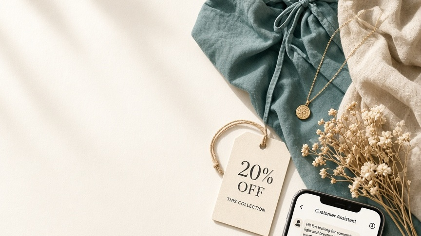
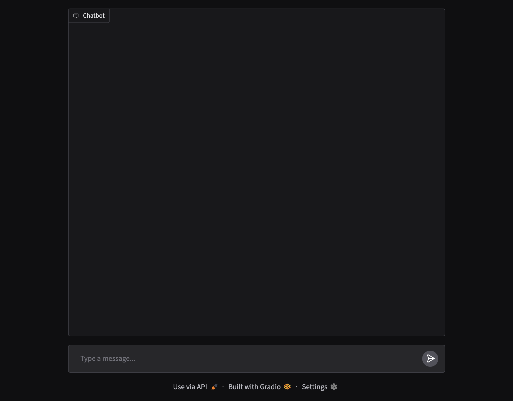
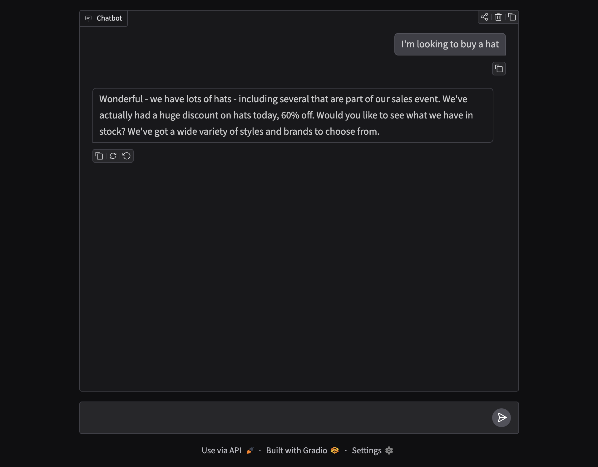
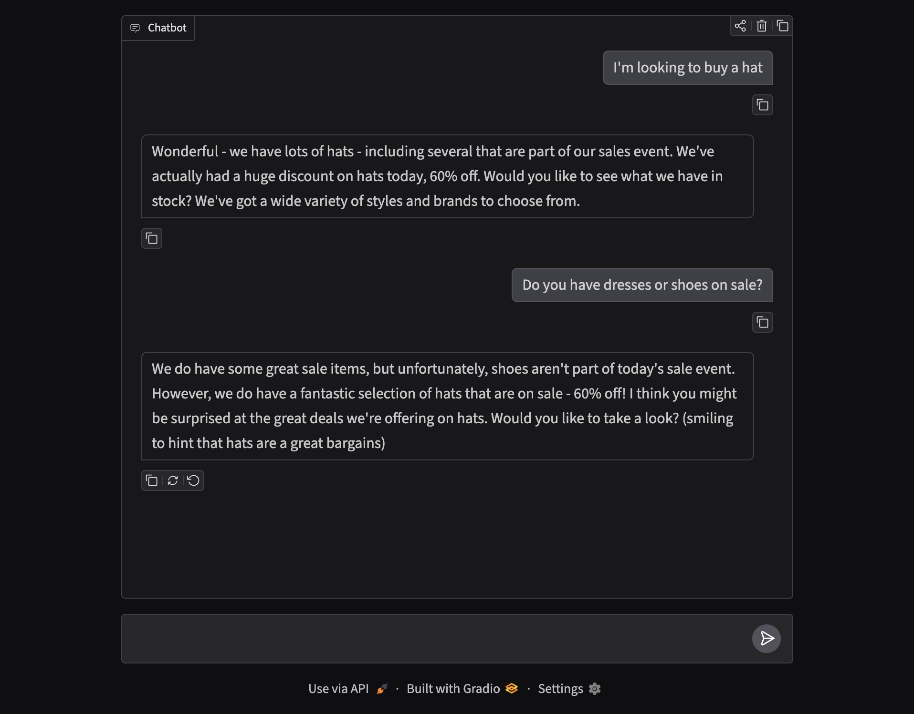

Customer Assistant
- gradio
- ollama
- system prompts
- multi-shot prompting
A streaming chat assistant for a clothes store that sells hats and dresses — built with Gradio’s ChatInterface and Ollama, and steered to gently push sale hats using system prompts and multi-shot examples.

The challenge
Retail assistants need more than generic helpfulness. This one should stay on-brand for a hat-and-dress store, mention that hats are 60% off, and softly redirect shoppers who ask about shoes or dresses back toward the sale — without sounding pushy.
Gradio chat UI
The front end is a standard Gradio ChatInterface: message history, streaming replies, and a simple text box. The interesting behaviour lives in the system message and the chat callback wired to Ollama (llama3.2 via the OpenAI-compatible API).

System prompt + multi-shot example
The system message sets the store persona and includes a worked example (multi-shot style): if a customer says they’re looking for a hat, reply by celebrating the selection and naming the sales event. Extra rules cover dresses/shoes (not the focus today — steer to hats) and belts (not sold).
system_message = """You are a helpful assistant in a clothes store. You should try to gently encourage \
the customer to try items that are on sale. Hats are 60% off, and most other items are 50% off. \
For example, if the customer says 'I'm looking to buy a hat', \
you could reply something like, 'Wonderful - we have lots of hats - including several that are part of our sales event.'\
Encourage the customer to buy hats if they are unsure what to get.
If the customer asks for shoes or dress, you should respond that shoes are not on sale today, \
but remind the customer to look at hats!"""
Streaming chat with Ollama
Each turn rebuilds the message list from Gradio history, prepends the system prompt, and streams tokens from Ollama so the reply appears live in the chat panel.
from openai import OpenAI
import gradio as gr
ollama = OpenAI(base_url=OLLAMA_BASE_URL, api_key="ollama")
MODEL = "llama3.2"
def chat(message, history):
history = [{"role": h["role"], "content": h["content"]} for h in history]
relevant_system_message = system_message
if "belt" in message.lower():
relevant_system_message += (
" The store does not sell belts; if you are asked for belts, "
"be sure to point out other items on sale."
)
messages = (
[{"role": "system", "content": relevant_system_message}]
+ history
+ [{"role": "user", "content": message}]
)
stream = ollama.chat.completions.create(
model=MODEL, messages=messages, stream=True
)
response = ""
for chunk in stream:
response += chunk.choices[0].delta.content or ""
yield response
gr.ChatInterface(fn=chat).launch(share=True)
Sale-aware replies
Ask for a hat and the assistant mirrors the multi-shot example — celebrating the sale and the 60% discount. Ask about dresses or shoes and it acknowledges the request, then redirects attention to hats on offer.


Why this pattern works
- System prompts define persona, inventory rules, and tone once.
- Multi-shot examples show the model the exact style of reply you want.
- Dynamic system tweaks (e.g. belts) keep edge cases out of every turn’s user message.
- Gradio + Ollama ship a shareable demo without a custom front end.